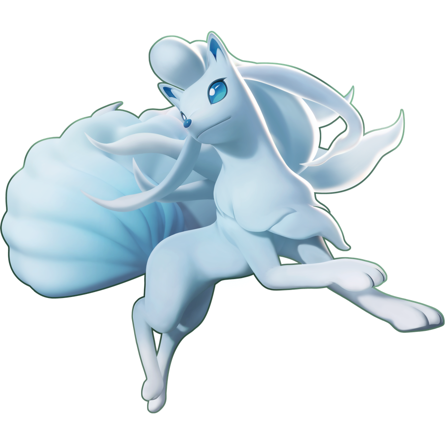
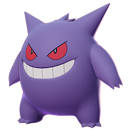
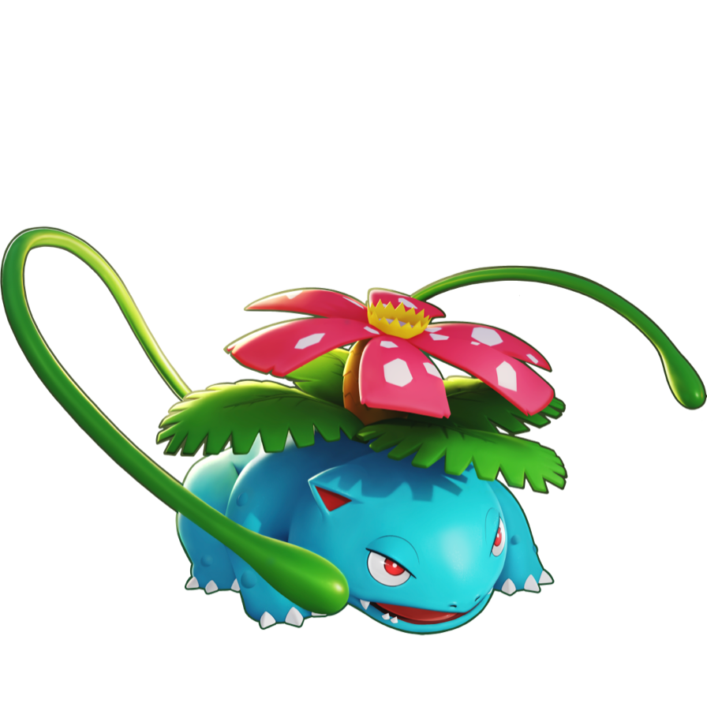

-
Pikachu
HP 300

Descrição
Descrito como um rato, os Pikachus são pequenos roedores de quarenta centímetros e de 6 Kg, com um corpo redondo, e pernas curtas e uma longa cauda em seu. com exceção de suas duas listras marrom nas costas e a ponta de suas orelhas pretas, eles também tem dois discos vermelhos em cada bochecha e sua cauda quando macho tem um formato de um raio, mas se o Pikachu for fêmea sua cauda ganha um coração na ponta. Geralmente são bípedes. Como praticamente todos os Pokémons, o Pikachu não fala; na série animada, ele se comunica verbalmente repetindo as sílabas do seu nome com tons diferentes ou através da linguagem corporal.
-
Charizard
HP 800

Descrição
Charizard is a draconic, bipedal Pokémon. It is primarily orange with a cream underside from the chest to the tip of its tail. It has a long neck, small blue eyes, slightly raised nostrils, and two horn-like structures protruding from the back of its rectangular head. There are two fangs visible in the upper jaw when its mouth is closed. Two large wings with blue-green undersides sprout from its back, and a horn-like appendage juts out from the top of the third joint of each wing. A single wing-finger is visible through the center of each wing membrane. Charizard's arms are short and skinny compared to its robust belly, and each limb has three white claws. It has stocky legs with cream-colored soles on each of its plantigrade feet. The tip of its long, tapering tail burns with a sizable flame.
-
Mewtwo
HP 1200

Descrição
Mewtwo is an artificial Pokémon. It is a bipedal, humanoid Pokémon with some feline features. It is primarily gray with a long, purple tail. On top of its head are two short, blunt horns, and it has purple eyes. A tube extends from the back of its skull to the top of its spine, bypassing its neck. It has a defined chest and shoulders, which resemble a breastplate. The three digits on each hand and foot have spherical tips. Its tail is thick at the base but thins before ending in a small bulb.
-
Ninetales de Alola
HP 350
Descrição
In the Alola region, Ninetales has a different appearance. Its coat is pale blue, and its fur is more flowing and wispier. The tips of its tails and crest, as well as the lower halves of its legs, are white. The crest on its head is longer and its nine tails are less distinct from each other. Additionally, it has larger eyes, which are blue, and small tufts of fur in front of its ears. Alolan Ninetales lives on Alola's snow-capped Mount Lanakila, which is considered by some to be holy ground. As such, it is revered as a sacred messenger or deity. Alolan Ninetales has a gentle temperament and is known to aid lost humans in distress, though this is primarily done to keep them out of its territory. It will punish any threat to its pack of Vulpix. It can produce ice crystals from its fur, which it can use for both offense and defense. The ice crystals can act as a shield or form balls that can be fired like bullets with enough force to shatter rock
-
Gengar
HP 324
Descrição
Gengar is a dark purple, bipedal Pokémon with a roundish body. It has red eyes, a wide mouth that is usually curled into a sinister grin, and pointed ears. On its back are numerous spikes and it has smaller spikes on top of its head similar to tufty fur. Its arms and legs are short with three digits on both its hands and feet. It also has a stubby tail.
Gengar has the ability to hide perfectly in the shadow of any object, granting it exceptional stealth. However, Gengar's body acts as a heat sink. Its presence cools the temperature of the surrounding area by nearly 10°F (5°C), because it absorbs the warmth. The anime has shown that Gengar can fly, possess people and other Pokémon, and extend its tongue by several meters. In Generation I, Night Shade was its signature move. -
Venusaur
HP 364
Descrição
Venusaur is a squat, quadrupedal amphibian Pokémon with bumpy, blue-green skin. It has small, circular red eyes; a short, blunt snout; and a wide mouth with two pointed teeth in the upper jaw and four in the lower jaw. On top of its head are small, pointed ears with reddish pink insides. It has three clawed toes on each foot. The bud on its back has bloomed into a large pink, white-spotted flower. The flower is supported by a thick, brown trunk surrounded by green fronds. A female Venusaur will have a seed in the center of its flower.